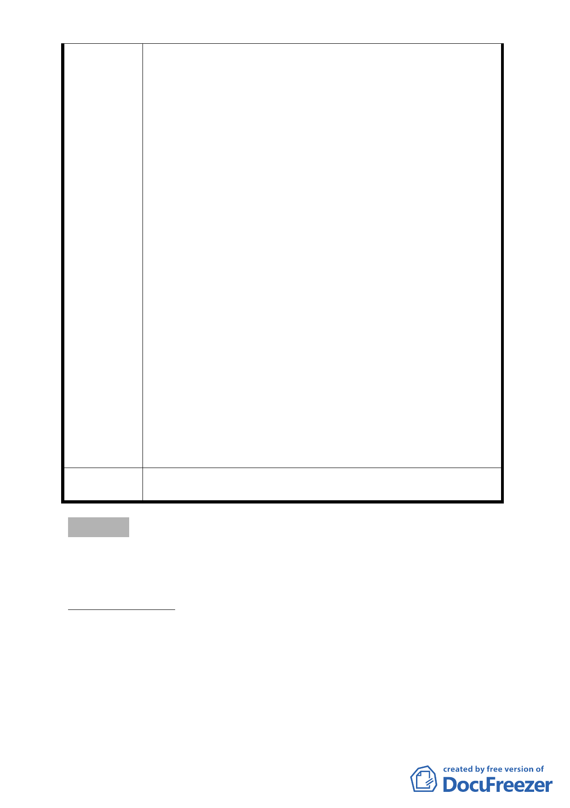

式辦理，私有土地受限基地規模難爭取到上限獎勵
容積率至 450％，恐有公平性問題。
（三） 為提高開放空間使用性，建議採綠帶方式留設：考量
計畫區周邊已有木柵公園，亟需線型綠地貫穿整區
，形成完整綠地系統，且計畫內土地使用可集中留
設公共開放空間後採容積調派運用方式，建議與同
街廓私有土地調整地形規劃綠帶後，可與私有地形
成區隔又具整體的公共開放空間系統，並解決私有
土地深度不足不利建築規劃問題。加上各街廓都更
後退縮人行道，塑造為綠軸，營造舒適、安全的居
住環境外，兼具都市防災功能。另有關地形調整後
綠帶及道路用地，容積調派至公營住宅開發基地，
調整後分區用地則同意參與同街廓都市更新。
（四） 為能繼續推行本案更新重建，建議陳情土地以都市計
畫專案變更方式辦理更新重建時，排除開發強度達
一坪換一坪後，雖未達開發強度 2 倍法定容積上限
，將不得再給予額外獎勵容積之限制，以符合原住
戶的期望
三、 考量捷運通車後帶來居住人口，需建立全區綠地及人
行步道系統。建議以木柵公園為中心，規劃立體化環
狀綠帶公共開放空間系統，串聯各公營住宅街廓及連
通至捷運站出口，可解決原為擴寬木柵路就地整建建
築物缺乏安全及完整的步道系統問題，帶動周邊相鄰
街廓更新。興隆路上立體化綠地系統更可創造公營住
宅門戶印象，並將木柵公園綠意延伸至各街廓，創造
舒適居住環境。
第 631 次
委員會決議
錄請市府納入本案第二期開發計畫參辦。
臨時提案
案名：修訂臺北市大同區承德路三段及庫倫街交叉口東北側（大
龍段一小段265-7地號土地）道路截角細部計畫案
案情概要說明：
一、計畫範圍及面積：
本計畫範圍係位於本市大同區40 公尺寬承德路三段
及25 公尺寬庫倫街交叉口東北側（大龍段一小段265-7 地
號土地）（詳下圖），該地領有市府都市發展局97建字第
0461號建造執照，其都市更新事業計畫並經市府98 年6 月
- 22 -